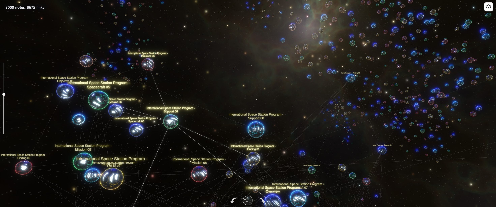

Global and Ego Graph
Inspect the full filtered vault, or limit the view to the active note and a connected neighborhood up to five link steps deep.
Obsidian desktop plugin
An interactive 3D view of an Obsidian vault. Explore links, tags, chronology, and focused neighborhoods without separating the graph from the notes it represents.

Inspect the full filtered vault, or limit the view to the active note and a connected neighborhood up to five link steps deep.
Use force-directed Dynamic links, stable Scalable links for larger graphs, or a chronological Dates layout with timeline navigation.
Filter by path, tag, and date, combine conditions, and exclude matches while keeping tag visibility and graph layout independent.
Click a node to open its note. Activate a note in Obsidian to find and highlight its visual node in the graph.
Pan, zoom, rotate, switch between detailed and simplified rendering, and copy the current graph view as a PNG screenshot.
Use close link inspection for small selections or panoramic layouts for dense graphs. The project is tested with up to 10,000 notes.
Interaction
Moving through the visual structure and moving through Obsidian notes are two directions of the same workflow.


Privacy and runtime
The plugin collects the minimum vault metadata required for the graph: paths and titles, tags, dates, file sizes, and resolved links. It does not send full Markdown contents to the graph runtime or to an external service.
Installation
The plugin is distributed through Obsidian Community Plugins. Source code and support links are available alongside the listing.